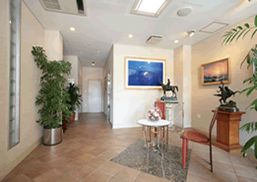
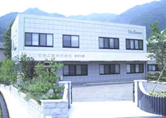

ABOUT US 会社概要
- 会社名
- フジ電機工業 株式会社
FUJI ELECTRIC DEVICES INDUSTRIES Co.,Ltd - 代表者
- 代表取締役社長 山岡 弘嗣
- 本社所在地
-
〒534-0025
大阪府大阪市都島区片町 1丁目 6番 16号
地図を表示 - 電話番号 / FAX番号
-
TEL：06-6358-4409（代）
FAX：06-6358-1880 - 受付時間
- 平日 9:00～18:00 （土日祝日休業）
- 設立
- 1979年（昭和54年）5月
- 事業内容
- 自動車用電装部品の企画、開発、設計、製造、販売
- 主要製品
-
自動車用セキュリティ・自動車用電装アクセサリーパーツ
自動車用AVアクセサリーパーツ - 資本金
- 5,000万円
- 従業員数
- 22名 （2019年6月現在）
- 主要取引銀行
-
三菱UFJ銀行 京阪京橋支店
りそな銀行 城東支店
関西みらい銀行 本店営業部 - 主要取引先
-
株式会社オートバックスセブン
株式会社イエローハット
中発販売株式会社
SPK株式会社
寿通信機株式会社
全国電装店
他100社以上

大阪本社外観

大阪本社1Fエントランス

サービスセンター
主な事業所
- サービスセンター
-
〒669-4132
兵庫県丹波市春日町野村530
TEL：0795-74-2177
FAX：0795-74-2187
地図を表示